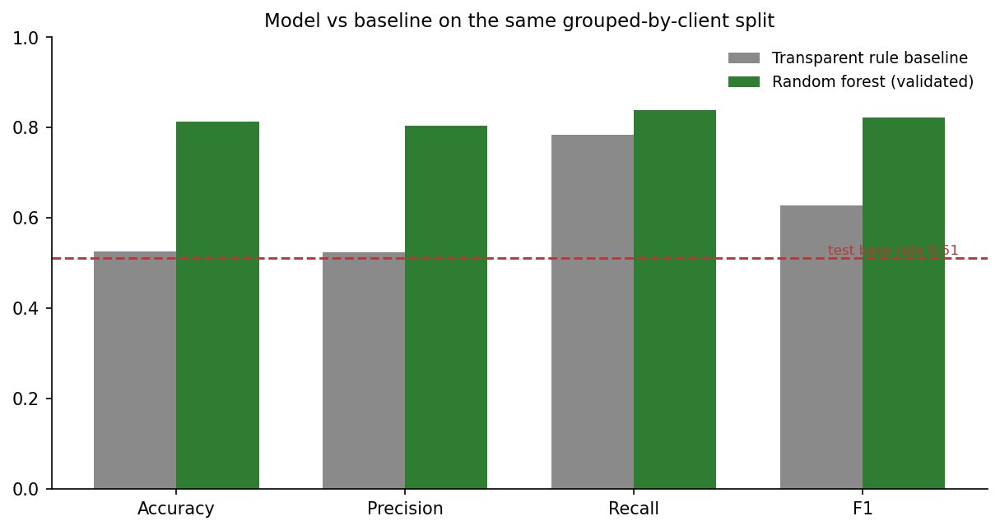
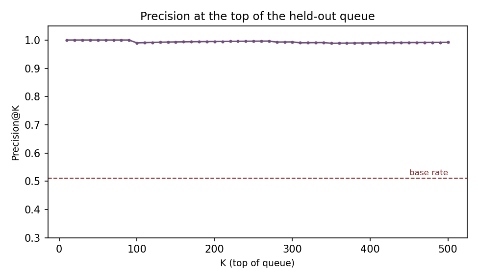
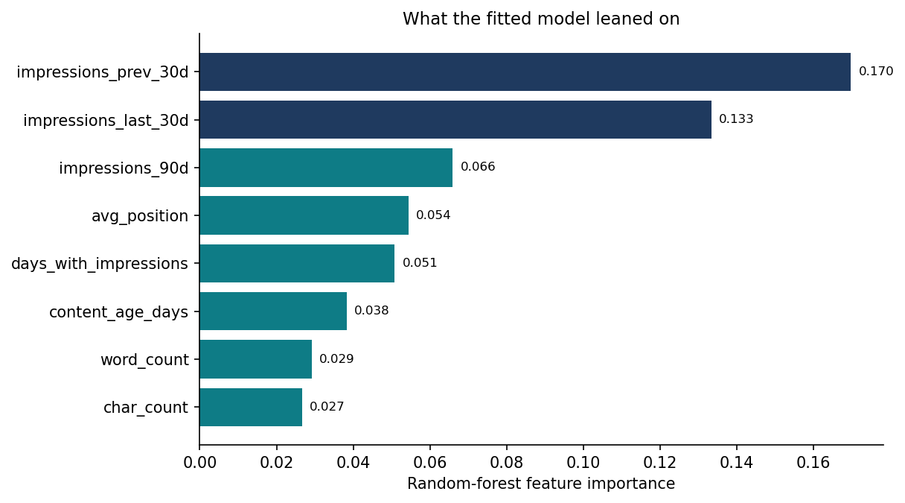
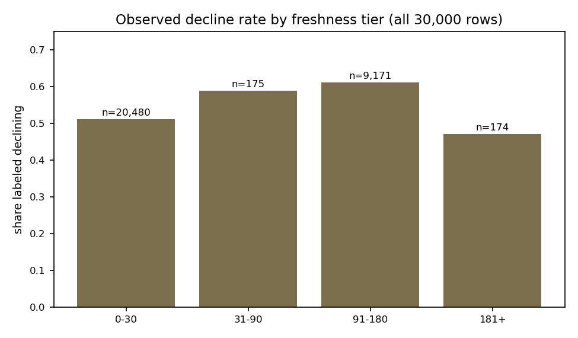
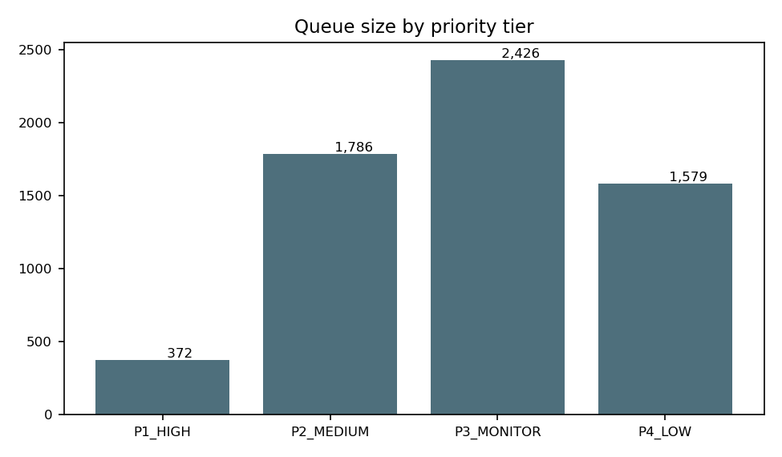
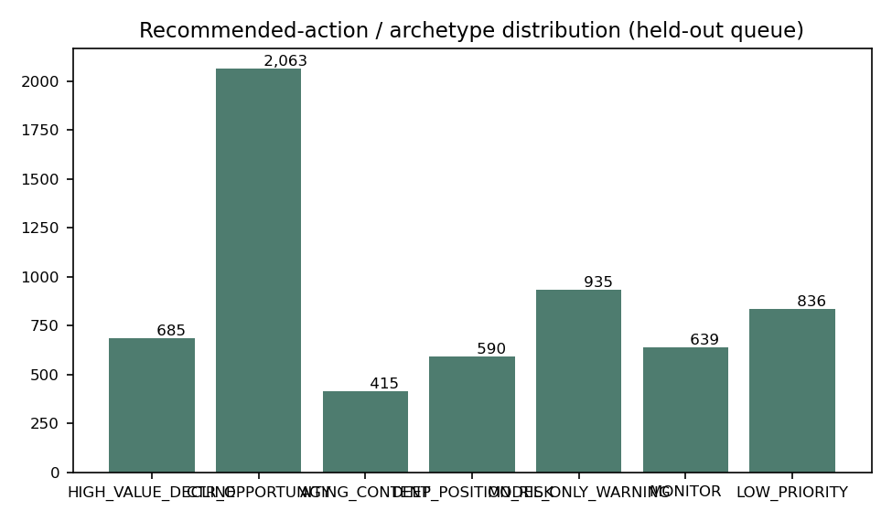

Capstone research paper · FlyRank ML Internship
Which pages decline in search first?
A content-refresh prioritization model that ranks which pages an editor should review before organic traffic drops.
Abstract
Content pages drift out of search visibility over time, and by the time a drop is visible the traffic is already lost — this paper asks whether the pages most likely to be declining can be ranked ahead of time from their own recent performance history. The analysis uses an anonymized snapshot of 30,000 real content pages (32 pseudonymized clients, trailing-90-day search and engagement metrics) drawn from the FlyRank internship warehouse release. A random-forest classifier was trained on historical search-performance, engagement, and content features and validated with a grouped-by-client holdout, so no client’s pages appear in both training and test folds. On 6,163 held-out pages from 7 unseen clients the model measured accuracy 0.81 and F1 0.82 versus 0.53 and 0.63 for a transparent rule baseline (test base rate 0.51), with precision@50 of 1.00. The output is a ranked, reason-coded review queue that helps SEO teams decide which pages to look at first — decision support for human editors, not automation.
1 · Introduction & problem statement
An SEO editor starts the week with a library of hundreds of pages and a limited afternoon of review time. Some of those pages are already sliding down the search results — fewer impressions this month than last — but nothing in the dashboard shouts “this one, next.” Refreshing the right page early is cheap; refreshing the wrong page, or missing the slide entirely, is how traffic quietly leaks away.
The decision this work supports is which pages to look at first. The unit of analysis is one content page. The output is a ranked queue: best-first, with a reason code and a suggested action for every row, so a human editor can walk the top of the list, verify each page, and decide. The cost of a wrong call is asymmetric: a false negative (a declining page the model calls “fine”) loses visibility that a timely refresh might have kept, while a false positive (a healthy page the model flags) mainly costs review time.
Why is this a machine-learning problem and not an if-statement? In this data, no single signal cleanly separates declining pages from healthy ones. Pages flagged as declining had last been updated 49.25 days ago on average versus 42.37 for healthy pages (a real but moderate edge), while CTR and average position moved in opposite directions depending on whether you compare means or medians. Decline appears to be a combination of interacting signals — impression history, click-through, position, freshness, engagement — which is exactly the kind of pattern a model can weigh and a single threshold cannot.
2 · Data
Release, tables, and window
This analysis runs on the anonymized starter snapshot that ships with the internship repo:
content_refresh_anonymized.csv — 30,000 rows × 44 columns, one row per content page, spanning 32 pseudonymized clients, with all metrics aggregated over a trailing-90-day window ending at export.
The snapshot is a public-safe teaching slice of the full FlyRank internship warehouse release
(the gated FlyRank/internship-warehouse build, ~78.8M rows of daily search performance across ~519.6k content items and ~104 clients, 2025-01-27 to 2026-06-30) —
the same column definitions and gotchas, a fraction of the rows.
The dataset is deliberately public-safe: no client names, domains, URLs, titles, keywords, or raw queries.
Identifiers are pseudonyms (content_/client_ + hex) and are used for grouping only.
What I used and what I excluded, and why
- Features: search-performance aggregates (
impressions_90d,clicks_90d,ctr,avg_position, 30-day comparison windows), engagement metrics (sessions, users, engagement, AI-referred sessions), content properties (word/char counts,content_age_days,days_since_last_update), and deterministic tiers. - Excluded — the label and its source:
trend_directionandtrend_pctare never features, because the label is derived from them. Including them would hand the model the answer. - Excluded — identifiers:
content_idandclient_idare pseudonymous IDs; using them as features would let the model memorize records and client patterns. Grouping/joins only. - Excluded — attribution metadata:
provider_usedandmodel_used(which LLM produced a draft) are not model features — they are workflow metadata, not page characteristics. - Handling of missing values: numerical blanks are filled with 0 and missingness is preserved with
has_*flags rather than silently imputed, because missingness itself tracks content type in this data. - Units that matter:
ctris a ×100 percentage (0.76= 0.76%), andavg_position = 0means no position data (1,205 rows), never rank zero.
3 · Methodology
3.1 Assumptions
- A page’s future performance is meaningfully related to its own recent history — the past 90 days carry signal about the next period.
- The snapshot is cross-sectional: I can measure associations and rank pages, but I cannot — and do not — claim that refreshing a page causes an outcome.
- Pseudonymized rows are groupable (per client) but not individually identifiable.
3.2 Label definition
The target is is_declining = the page’s trend_direction is “down” — an observed label: last-30-day impressions more than ~20% below the previous 30 days.
In the full snapshot, 16,262 of 30,000 pages (54.2%) carry this label; on the held-out test fold the base rate is 0.51.
The label is observed from real data, not a rule I invented, and it is never a feature.
3.3 Feature set
A 66-column feature matrix built from the trailing-90-day snapshot: raw aggregates, log-transforms (traffic is heavy-tailed — impressions_90d has a median of 731 but a mean of 5,200), derived rates, tiers, and one-hot encoded categorical context. Every column is known at prediction time; there is no future window in the data.
3.4 Baseline — a transparent rule
Before any model, I built the obvious editorial heuristic and measured it on the same split and metrics as the model. The rule flags a page as declining if any of four conditions holds: not updated in 90+ days, CTR below the median, average position worse than 20, or impressions below the median. It is simple, explainable, and cheap — the fair comparison for a learned model.
3.5 Validation design
The split is grouped by client: GroupShuffleSplit(test_size=0.2, random_state=42) on client_id, giving 25 train clients (23,837 pages) and 7 test clients (6,163 pages) with a verified zero client overlap.
Every score in the queue and every metric in this paper comes from that held-out fold — no training page is scored.
The grouped design matters: a plain random split lets pages from the same client appear in both folds, and the model can borrow client-level patterns (template, niche, publishing workflow) to flatter its score.
3.6 Leakage checks
- Label-derived columns:
trend_direction,trend_pct, and the label column itself are verified absent from the feature matrix. - Sanity test: the harness must catch leakage when it is present. Re-running the identical pipeline with
trend_pctadded back pushes accuracy to 0.9997 — confirming the check works and why those columns can never be features. - Disclosed gray zone:
impressions_last_30dandimpressions_prev_30dare legitimate raw inputs available at prediction time, but the label is a deterministic function of their ratio. This is not classic leakage, yet it means the model can reconstruct much of the label from two columns — part of the headline accuracy is the model restating the trend, not detecting decline from independent signals. I keep the caveat visible in every Results reading.
3.7 Split-optimism check
The original Week-5 estimate (a single random 80/20 split) measured accuracy 0.866. Recomputing the identical pipeline on the grouped split gives 0.814 — the ~0.05–0.06 gap is the apparent performance the random split could not support once client groups were kept intact. All numbers reported here use the honest grouped split.
4 · Results — model vs. baseline on the same split
Model: random forest (n_estimators=200, random_state=42).
Comparison: baseline rule vs. model, same grouped-by-client test fold (6,163 pages, 7 clients), same metrics.
The test base rate is 0.511 — predicting “declining” for everything would score 0.511 accuracy, so that is the floor any honest result must be read against.
| Metric (held-out fold) | Baseline rule | Random forest | Change |
|---|---|---|---|
| Accuracy | 0.527 | 0.814 | +0.29 |
| Precision | 0.525 | 0.805 | +0.28 |
| Recall | 0.785 | 0.840 | +0.05 |
| F1 | 0.629 | 0.822 | +0.19 |
| ROC-AUC | — | 0.905 | — |
Source: committed metric receipts — work/outputs/action_playbook_metrics.json, recomputed in notebooks w05–w07.

4.1 At the top of the queue: precision@K
For a review workflow, what matters is the top of the ranked list — the pages an editor actually reaches first. On the held-out fold, the model’s top of the queue is almost purely truly-declining pages.
| K | 10 | 25 | 50 | 100 | 200 |
|---|---|---|---|---|---|
| Precision@K (truly declining) | 1.00 | 1.00 | 1.00 | 0.99 | 0.995 |

4.2 Where the model is wrong
No classifier is perfect here, and the failures are instructive. Confusion matrix on the held-out fold (rows = true label, columns = prediction): 2,373 + 641 true/decline-correct, 504 missed declines, 641 false alarms — 20.0% of flags are false alarms.
- False positives (predicted decline, actually stable): the model’s boundary sits slightly below the label’s ~20% threshold. Observed cases had mild impression dips within the stable band combined with a “stale + weakly visible” profile (deep positions, no clicks, 100+ days un-updated) — the model flags the profile even where the trend was roughly flat.
- False negatives (missed decline, actually declining): the mirror image — pages with healthy-looking profiles (recently updated, page-1 positions, healthy CTR, high impressions) whose last-30-day impressions nonetheless dropped more than 20% (observed −24% to −58% in sampled cases). The model’s freshness/visibility signals said “safe” while the trend said “down.”
These examples are diagnostic, not a causal explanation. A decision-support reader should treat high-confidence flags on stale, weakly-visible pages as plausible candidates, and should not read a “safe” prediction on a fresh, well-ranked page as proof the page is not declining.
4.3 What the fitted model leaned on

4.4 A negative-ish result, honestly reported: freshness is not a clean gradient

5 · Limitations & honest framing
- One snapshot, one split. The grouped split is a measured indication of cross-client behavior on this dataset, not a guarantee for future clients, future months, or other content libraries.
- No causality. This is cross-sectional data. I can rank pages; I cannot say that refreshing a page will improve anything. Refresh impact was not measured — the dataset has no intervention/outcome pair.
- The label is nearly reconstructable from two features. Because the label is the ratio of
impressions_last_30dtoimpressions_prev_30d, part of the accuracy is the model restating the trend. It is not classic leakage, but it is disclosed here. - Read accuracy against the base rate. 0.81 accuracy on a 0.51 base rate is meaningful, but a headline accuracy without its base rate is not.
- 20% of flags are false alarms. Precision@50 is 1.00, but overall flag precision is 0.80 — reviewers will see false positives lower in the queue.
- Confounders everywhere. Declining pages differ from healthy pages in many ways at once; the model cannot separate correlation from cause, and search performance moves for reasons outside this data (seasonality, competition, ranking-system changes).
- No editorial context. The model never sees topic quality, intent freshness, or competitive dynamics — all things a human reviewer does.
- Thresholds are policy choices. The 0.5 decision boundary and the P1–P4 priority tiers are proposed decision-policy thresholds, not empirical truths.
- Decision support, not automation. Nothing in this work is licensed to auto-publish, delete, redirect, or rewrite content.
6 · Ranked recommendations — the action playbook
The playbook turns the validated model into a ranked queue built only from the held-out fold (6,163 pages, 7 clients — every score out-of-sample).
Priority is a labeled heuristic, not revenue:
priority = 0.6 × P(decline) + 0.3 × impression value + 0.1 × staleness.
Tiers: P1 ≥ 70 (review first), P2 55–70 (review soon), P3 40–55 (monitor), P4 < 40 (routine).
| Reason code | Fires when | Archetype | Pages | Recommended action |
|---|---|---|---|---|
| RC01 · High-value decline | predicted decline + impressions ≥ 75th pct | A · High-value declining | 685 | Prioritize human refresh review |
| RC02 · CTR opportunity | impressions ≥ 50th pct + CTR < 0.5% | B · High-impression, low-CTR | 2,063 | Review title, meta, SERP alignment, intent |
| RC03 · Aging content | un-updated ≥ 90 days + (predicted decline or ≥ 50th-pct impressions) | C · Aging content | 415 | Freshness and factual-accuracy review |
| RC04 · Deep position risk | predicted decline + avg position > 10 | D · Ranking deterioration | 590 | Investigate relevance, quality, linking, competition |
| RC05 · Model-only warning | predicted decline, no stronger observable signal | E · Model-only warning | 935 | Manual investigation before any action |
| RC06 · Monitor | P(decline) 0.30–0.50 | F · Monitor | 639 | Re-check next cycle |
| RC07 · Low priority | P(decline) < 0.30 | G · Low priority | 836 | Routine monitoring only |
CTR is a ×100 rate column; “CTR < 0.5” means below 0.5%. A row can match several codes; the primary code is the first match in order.


What an editor should do tomorrow
- Start with P1 (372 pages). These combine predicted decline with high traffic exposure (RC01/RC02/RC03 on high-impression pages) — highest value per review hour. Sample the queue here: every one of the top 50 was truly declining in the snapshot.
- Do not act on RC05 model-only warnings (935 pages) without a manual look. These are flags without a strong observable corroborating signal — exactly the rows where a human must verify the trend by hand (re-derive last-30 vs. prev-30 impressions) before touching anything.
- Treat RC02 (2,063 pages) as a CTR review, not a decline verdict. High impressions with sub-0.5% CTR is a title/meta/intent question; the model itself does not claim these pages are declining.
- Monitor P3 (2,426 pages) next cycle. Near-boundary and monitor rows (1,204 pages within 0.15 of the 0.5 boundary) should be re-checked, not actioned.
- Never automate the action. The human-review rule is
prediction → recommendation → human validation → action. The no-go list for automation is explicit: no auto-publish, auto-delete, redirects, canonical changes, index-directive changes, or unattended metadata edits — measured precision is below 1.0 and this dataset establishes no causal or revenue evidence.
7 · Reproducibility
Everything recomputes from the repo. The pipeline is deterministic where it matters — fixed seed random_state=42, same preprocessing, same fold assignment — and the metric receipts are committed, not typed in from memory.
- Repo: github.com/YoyuQre/flyrank_assgn_1 (MIT-licensed code; data under the repo’s
DATA_USE.mdterms). - Framing: w01 · research question, w02 · task framing, w03 · data contract.
- Baseline: w04 · baseline action score.
- Model: w05 · model (feature vector, grouped split, comparison table).
- Validation audit: w06 · leakage + split audit — reproduces both the random and grouped evaluations, the leakage sanity test, and the failure examples.
- Playbook: w07 · action playbook — rebuilds the queue, tiers, reason codes, figures, and the committed metric file
work/outputs/action_playbook_metrics.json. - Capstone mirror: capstone.ipynb — the paper’s skeleton (question → data → methodology → results → limitations → recommendations → artifacts).
- Environment: Python + pandas, numpy, scikit-learn (requirements in
requirements.txt). Data dictionary:docs/data-dictionary.md. - What you can check: the held-out fold was sealed by
GroupShuffleSplit(test_size=0.2, random_state=42); the metrics JSON and queue regeneration are self-verified by the w07 notebook’s automated assertions. Thedata/folder is gitignored and CI blocks any dataset commit.
8 · Acknowledgments & data credit
This paper is built on the FlyRank ML Internship dataset — real production search, engagement, and content data made available (anonymized) for this capstone. Thank you to the FlyRank team for the internship program, the data governance, and the mentorship that made this analysis possible. The FlyRank research paper The State of AI-Driven SEO (March 2026) informed this project’s methodology questions around freshness levers and validation design. All identifiers in the dataset are pseudonyms; no client names, URLs, or raw queries appear anywhere in this work.
Honest-claims note. Language throughout this paper is limited to what the evidence carries: observed, measured, directional, decision-support. This project makes no causal claim and does not “predict Google’s algorithm” — it models outcomes in one anonymized portfolio to help humans prioritize reviews.